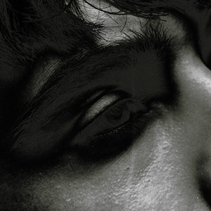
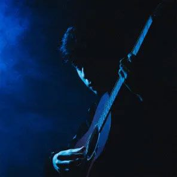

Biografia
Iván Cornejo, un cantautor de ascendencia mexicana nacido en Riverside, California en 2004, es conocido por su estilo musical que fusiona el sierreño con elementos de otros géneros.
Su música se caracteriza por letras sinceras y una propuesta minimalista que ha conectado con un público amplio, especialmente entre jóvenes.
Desde pequeño, Iván mostró interés por la música, aprendiendo a tocar la guitarra viendo tutoriales en YouTube.
Se caracteriza por una mezcla de sierreño y otros géneros, creando una identidad musical única.
Su álbum debut, "Alma vacía" (2021), alcanzó éxito en Billboard, y su canción "Está dañada" se convirtió en un éxito viral en YouTube.
En 2025, Iván Cornejo ha lanzado su gira Mirada Tour, que ha sido muy exitosa en México.
